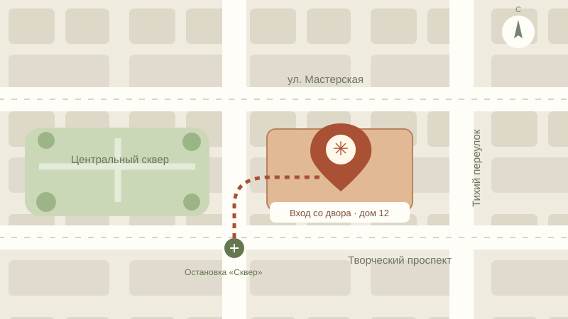

Здесь начинается творчество
Как нас найти
Новосибирск, ул. Мастерская, 12
Вход со двора, второй этаж.
Ежедневно, 10:00–21:00
+7 (383) 000-00-00
hello@example.com

Центр творческих мастерскихМастерская, 12 · вход со двора
Схема проезда · масштаб 100%
От остановки «Сквер» — 3 минуты пешком
Вход со двора дома 12, второй этаж.